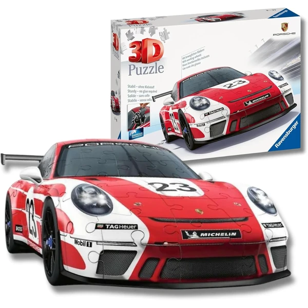
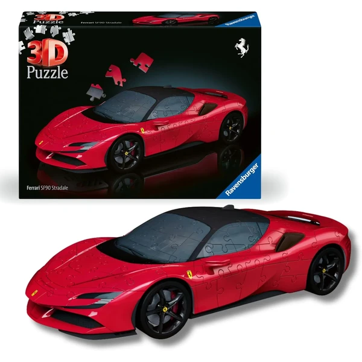
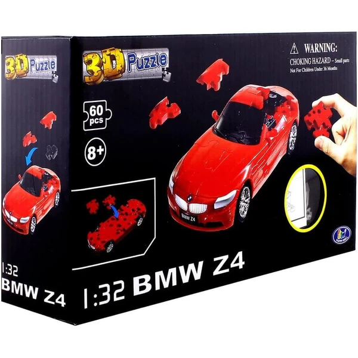
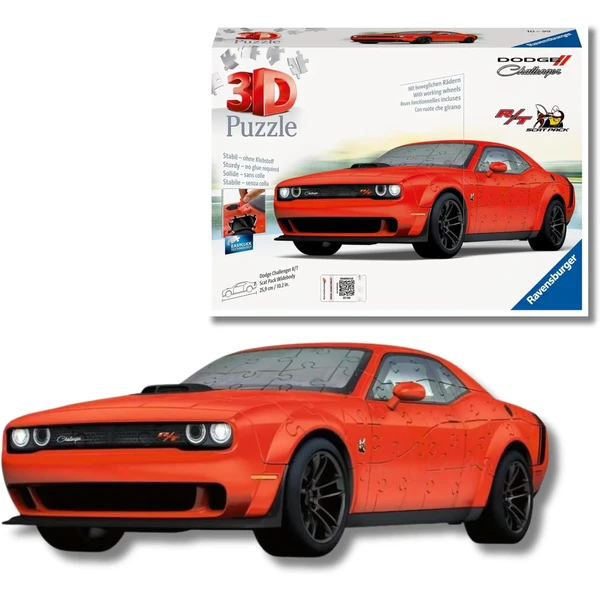
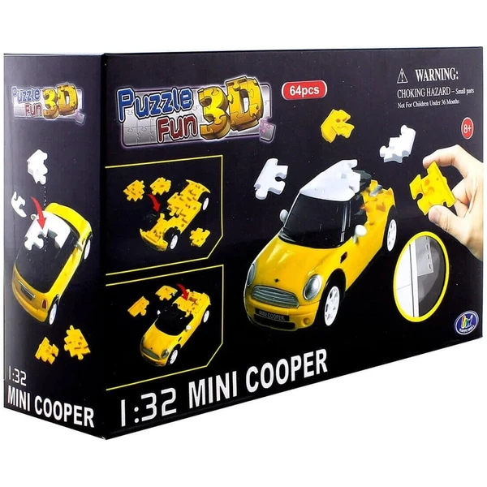

✨ Guía especial
Puzzles 3D de coches deportivos: Lamborghini, Porsche, Ferrari y más
Los modelos más populares y qué marca elegir
Los modelos más populares y qué marca elegir
Los puzzles 3D de coches deportivos son de las opciones más habituales como regalo para adolescentes y adultos aficionados al motor. Lamborghini lidera claramente el catálogo, seguido de Porsche y Ferrari, y con Ravensburger como marca dominante en prácticamente todo el catálogo. En esta guía repasamos los modelos principales y dónde comprarlos.
Lamborghini es, con diferencia, la marca de coche más popular dentro de esta categoría, con el modelo Huracán como variante específica más nombrada. Los modelos suelen tener un nivel de detalle notable en la carrocería, con piezas pensadas para reproducir las líneas características del deportivo — de mayor dificultad que la mayoría de figuras de animales o licencias infantiles, pensado para un público adolescente o adulto con algo de experiencia previa.
 Lamborghini Huracán
Ver en Amazon →
Lamborghini Huracán
Ver en Amazon →
El Porsche 911 aparece como la segunda opción más popular, algo por detrás de Lamborghini pero con presencia constante en el catálogo. Ferrari completa el podio, con una oferta de modelos similar a la de Porsche.
Ambos siguen el mismo patrón que Lamborghini: modelos de dificultad media-alta, pensados para quien ya tiene algo de experiencia con puzzles 3D o busca un reto mayor que las figuras más sencillas de la categoría infantil.

Porsche 911 Ver en Amazon →
Ferrari Ver en Amazon →Estos tres modelos completan el catálogo de coches deportivos en puzzle 3D, aunque son mucho menos habituales que los tres anteriores. Dodge y Mini Cooper, en concreto, aportan un perfil algo distinto al resto: un clásico americano y un compacto europeo frente al deportivo de Lamborghini, Porsche y Ferrari — buenas alternativas si el destinatario del regalo tiene preferencia por este tipo de coche.

BMW Ver en Amazon →
Dodge Ver en Amazon →
Mini Cooper Ver en Amazon →A diferencia de otros temas de la categoría como Titanic —donde CubicFun dominaba— o Harry Potter y Torre Eiffel —donde competían varias marcas—, en coches deportivos Ravensburger prácticamente no tiene competencia real: aparece asociado a Lamborghini, Porsche y Ferrari por igual, con licencias oficiales de las propias marcas de automóviles en varios casos. Es la opción más segura si buscas un modelo de calidad reconocida, sin necesidad de comparar entre varias alternativas como en otros artículos.
Todos los modelos de Lamborghini, Porsche y Ferrari se encuentran principalmente en Amazon, donde hay más variedad de marcas de coche disponibles de forma constante que en tienda física.
También se encuentran en Carrefour y Juguettos, aunque con disponibilidad más limitada y sujeta a campaña.
Lamborghini, con diferencia — especialmente el modelo Huracán. Le siguen Porsche 911 y Ferrari.
Ravensburger es la marca de referencia, con presencia en prácticamente todos los modelos de Lamborghini, Porsche y Ferrari, en varios casos con licencia oficial del fabricante del coche.
Son de dificultad media-alta, pensados sobre todo para adolescentes y adultos con algo de experiencia previa en puzzles 3D, no como primer modelo para un niño pequeño.
Principalmente en Amazon, con más variedad disponible. También en Carrefour y Juguettos, sujeto a campaña.
Todos los tipos, materiales, marcas y modelos según la edad.